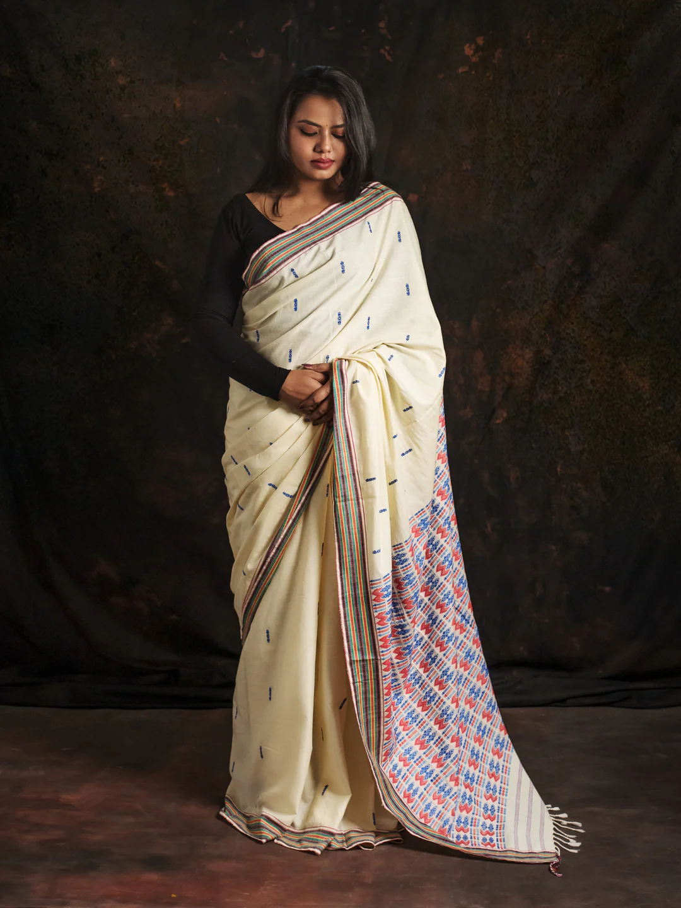

An eminent geographical indication, Puandum sarees find their home in the state of Mizoram.
The Puandum saree, also known as Puanchei, is a traditional attire worn by the Mizo women of Mizoram, a state in northeastern India. The origin of the Puandum saree can be traced back to the rich cultural heritage of the Mizo community and their traditional weaving techniques.
The Puandum saree is typically handwoven using indigenous methods and materials. It often features intricate designs, vibrant colors, and traditional Mizo motifs that reflect the cultural identity and artistic skills of the Mizo weavers. These sarees are usually worn on special occasions, festivals, and important ceremonies, symbolizing the cultural pride and heritage of the Mizo people. The weaving of Puandum sarees is a time-honored craft that has been passed down through generations among Mizo women. It not only serves as a symbol of cultural identity but also plays a significant role in sustaining traditional weaving practices and promoting the rich textile heritage of Mizoram.
